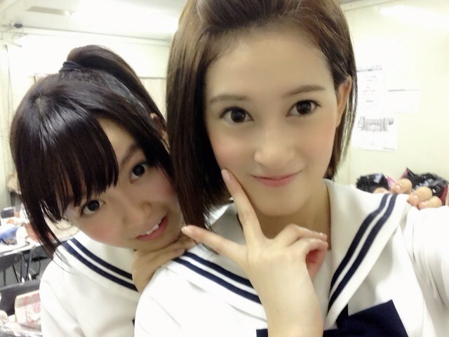

| 2013/09 24 Tue | ひめたん(*>ω<*)そ の346 |

肩越しにこんにちは。
氣志團万博のステージ直後だから
汗でステキなことになっておりますひめたんです
顔色良すぎるなんだこれ(笑)
超高校級のリボン！
いいねーステキだね(〃ω〃)
ダンガンロンパファンの方
推しメンとか教えてくださったりして
なんかちょっとお話できたー楽しいー♪
ゲームもねー気になってるので
いつかやりたいんだけどねー
さゆにゃん (井上小百合ちゃん)
万理華 (伊藤万理華ちゃん)と
似顔絵をかきあいこしたんだよー( ^ω^ )
ふたりともね上手なんだよー
ひめたんはねみーんな同じ顔になってるらしいよー
あ、そうそうコメントの中にね
「ひめきゅんさんにりぼんさがし
手伝ってもらったらー？」ってのがあったので
気が向いたらご協力してくださーい＼(^O^)／
この写めの真ん中のりぼんなんだー
もし見つけたらお店教えてもらったら
ままが買いにいってくれるそうでーすー♪

肩越しにこんにちは。
氣志團万博のステージ直後だから
汗でステキなことになっておりますひめたんです
顔色良すぎるなんだこれ(笑)
超高校級のリボン！
いいねーステキだね(〃ω〃)
ダンガンロンパファンの方
推しメンとか教えてくださったりして
なんかちょっとお話できたー楽しいー♪
ゲームもねー気になってるので
いつかやりたいんだけどねー
さゆにゃん (井上小百合ちゃん)
万理華 (伊藤万理華ちゃん)と
似顔絵をかきあいこしたんだよー( ^ω^ )
ふたりともね上手なんだよー
ひめたんはねみーんな同じ顔になってるらしいよー
あ、そうそうコメントの中にね
「ひめきゅんさんにりぼんさがし
手伝ってもらったらー？」ってのがあったので
気が向いたらご協力してくださーい＼(^O^)／
この写めの真ん中のりぼんなんだー
もし見つけたらお店教えてもらったら
ままが買いにいってくれるそうでーすー♪

 ひめたんたこ焼きすき？
ひめたんたこ焼きすき？
たこ焼きとゆーかなんとゆーか
タコが好きじゃないので
お店だったらタコ抜きます←
おうちだったらタコのかわりにウインナー入れる！
ひめたんは天使ですかー？笑
それは違うよ！(論破)
我が家に犬がきたー！笑
ひめたん犬に名前付けるとしたらなににする？
てか名前つけてくれない？笑
荷が重いなこりゃまた(´・ω・｀)いいの？
じゃあ一応提案はするから
候補に入れてみてくださいねー
『こうしちゃん』☆
ひめたんにあげようと思ってリボン作ったの！
今度握手会行く時に渡したいなーって
思ったんだけど手作りの下手なリボンでも
貰ってくれるかな？
まず手作りってとこに拍手！
これぞおにゃのこだね( ^ω^ )ひめたん見習いたい。
そしてとっても嬉しいよー///
絶対受け取って大事にします！
ひめたんは乃木坂の衣装で一番
何の衣装が好きですかー？
13金の黄色ふわふわワンピかな♪
初期に着てたピンクセーターも好き！
ひめたんって休みの日でも
いくちゃんと遊んだりするの？
遊ぼうねーって話はするんだけどね
お互い学校があったりして
なかなかプライベートで遊ぶ時間が
とれなかったりします(´・ω・｀)
あっでも足つぼ行く約束してるんだよー
ひめたん自身、東京オリンピックの頃、
何してると思う？
24さいかあー。
夢を追いかけてたり叶えてたらいいなー♪
テスト前とかしっかり勉強するん？
するタイプでしたかつては。
暗記物なんて覚えりゃ点とれるんだから
って世界を生きてましたかつては。
ひめたんの直筆サインカード当たったよ！
それって、ホントにひめたんが書いてくれたの？
ひめたんの直筆なら
ひめたんしかかけないからね♪
届いてるんだなーって安心しましたーおめーと☆
ひめたんのこと"ひめ"って呼んでもいい？
照れてれ///いーよー！
はい、燃費高めなんで
この一発で俺は瀕死になりましたが
ひめたんは何発ひめたんびーむを
撃つことができるのですかー？？
お願い死なないで(´・ω・｀)
そーだなー握手会ではいつも
あなたにしか撃ってないはずなんだけどなー♪
ひめたんのブログの最後に載ってる
用紙はなんですか？
前回(ゆーて何ヵ月か遅れてるけど←)の記事の
コメントで46、146、246とか踏んだ方に
手書きでコメ返するコーナーです！
ぜひ46番狙ってみてー難しいらしいよー？
ひめたんは海外には行ったことはありますか？
行ったことないです！
でもねー飛行機がそんな得意じゃないからね
行けるのかな(´・ω・｀)寝てれば着くかなーし
ごーめんなさーい乃木どこ(´・ω・｀)
全員集合回の続きでしたー
観てくださった方ありがとーう！
坂之上くんかわいらしかったね◎
(＊´・ω・＊)
コメント(274)
2013/09/24 09:30